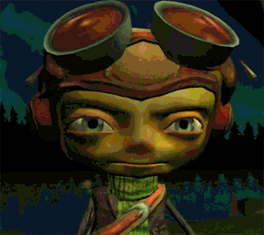

Trust me, it's goooood!
I wouldn't be making this tribute website if it wasn't so good, so trust me. But expanding on that, Psychonauts is easily one of the best pieces of media that I have ever consumed in my entire life, for so many reasons, but primarily because of its uniqueness among other games, which resulted in a faithful fanbase turning it in a super regarded cult classic.
You like crazy cartoons?
It really does feel like a crazy cartoon put on a game, with its artstyle, personality, plot choices, characters, humour, dialogues and the general vibe of it. It has that early-2000's Cartoon Network style and humour mixed with an early Pixar movie feeling, which makes it even more incredible. A mix of boldness and creativity from Tim Schaffer, because he really dove deep inside his most diverse ideas to make every single element of this game. But let's talk more about everything that makes it so good!
The Setting
Get psyched!
The whole vibe of the game is very different and creative, and you can sense all the love and care put into it by the whole team, but most importantly, by Tim Schaffer, the master-mind behind this masterpiece of a game.
It has pretty detailed elements throughout the game and all of its pieces that transform it in a psychedelic experience, handling primarily with themes and topics that involves psychology and mental health, besides other plot-specific beats and things about relationship, believing in youself and overcoming our own demons.
And I can't talk about the vibe and setting of the game without mentioning the GREAT soundtrack composed by Peter McConnell!
But what happens in the game? Well, I really think you should dive into the game knowing as little as possible. But the premise is simple: you are in a summer camp with other kids on the pursuit for becoming a Psychonaut, that is, a special agent that have psychic powers and can travel through the minds of others, and the whole game is wrapped in this concept for its level design and character development, which we're gonna talk about as well!
The Characters
Bunch of weirdos
We take control of Raz, a circus boy who wants to become a Psychonaut, and with him, we go through a self-discovery journey as well an adventure through different perceptions of reality. Those different perceptions of reality come from the other characters in this game, who are so unique and full of personality, which makes them feel so memorable and fresh throughout all of the game. That, of course, is the result of an incredible character design, writing (the humour in particular is PHENOMENAL) and AMAZING voice acting by all of the people involved.
Visit the CHARACTERS page to see more.
The Psi-powers
Get to exercise your psyche
We can't talk about a game without talking about mechanics, and in this section we're talking particularly about the psi-powers, which are the abilities we get through the game to interact with the world and the levels, to overcome the obstacles and for combat too. All of the powers are mind-related in some creative way, because we are dealing with Psychonauts after all, and each one have their unique purpose and usage, giving you the opportunity to make up your own game style and experiment different aproaches (that is even more present and evident in the second game)!
Visit the PSI-POWERS page to see more.
The World of Psychonauts
Travel through the minds of the misfits
The level design is probably what draws the most attention from the game, because every single level is set inside the mind of characters, so I think you can just imagine how much crazy they must go to get the right amount of surrealism and an out-of-this-world vibe for this spaces in a 3d platform game, using a lot of symbolism in the representation of the minds, presenting the idea of enemies being the subconsciousness attacking something that shouldn't be there, for example.
The artstyle is superb and what really shines in setting the said surrealism, and there is little to no repetition between this levels, because every single character in which you go inside the mind is so different and unique in its personality (and craziness, sometimes)! The mechanics that are implemented in each level are also very particular to the mind you are visiting, which makes even more incredible and refreshing!
Psychonauts 2
16 years later
You think it couldn't get any better? Well, it damn well can! Psychonauts 2 takes everything good and that worked in the first one and takes it to another level!
Psychonauts 2 is the perfect sequel, takes all the themes and the tone of its predecessor and deals in a more responsible and educative way (mental health professionals were consulted for the writing of the game).
The game is much prettier overall, because its a 2021 game vs. a 2005 game, of course! The platform aspect of the game is much less clunky, the combat is much more of a core mechanic and fun and the story, which you couldn't believe could be any better than the incredible from the first one, is actually even better! So, don't wanna play the 2005 game because you are a lazy bastard? Play this one instead! It's the best game ever!